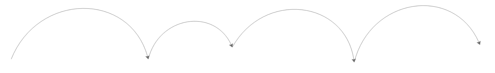
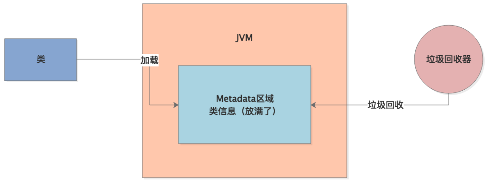
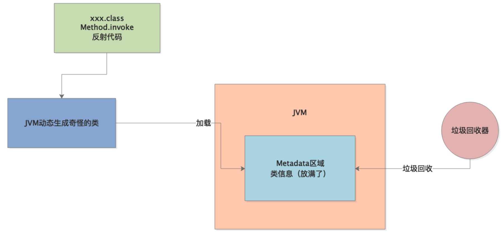
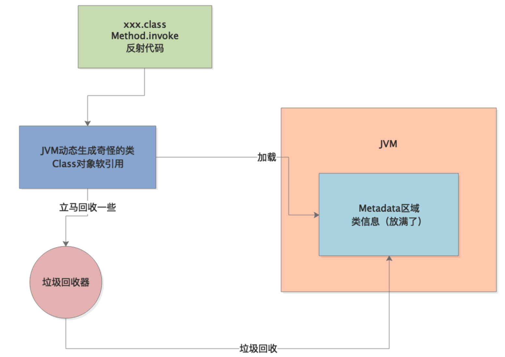

本章介绍的案例比较特殊，是由于人为设置JVM参数错误，而导致的JVM性能问题。
首先，生产环境有一个新上线的系统，频繁触发Full GC告警。通过GC日志，我们发现日志中有大量以下字样：【Full GC(Metadata GC Threshold) xxxxx,xxxxx】
从这里就知道，频繁的Full GC是因为Metadata区域（JDK1.8+）被占满。
Metadata区域，也就是元数据区，一般存放着类信息，为什么会被频繁占满，进而触发Full GC呢？我们通过工具分析元数据区的内存占用情况，发现元数据区域的内存使用波动曲线类似于下面这样：

也就是说，元数据区的内存占用不断增加，当达到一个顶点后（快占满）就会触发Full GC，Full GC会对元数据区域进行垃圾回收，所以接下来元数据区的内存占用就又变小了。
通过上述的案例背景介绍，已经可以很明显的看出，系统的问题就是不断有新的类被加载到元数据区，导致不断地触发Full GC：

那到底是什么类在不断地被加载呢？
我们可以通过在JVM启动参数中加上以下配置，然后观察GC日志：-XX:TraceClassLoading -XX:TraceClassUnloading
这两个参数，用来追踪类加载和类卸载的情况，GC日志中会打印出JVM加载了哪些类、卸载了哪些类：【Loaded sun.reflect.GeneratedSerializationConstructorAccessor from _JVM_Defined_Class】
可以看到，JVM在运行期间不断地加载了大量的“GeneratedSerializationConstructorAccessor”类到元数据区，这些类是在程序中使用Java的反射时加载的，比如像下面这样：
Method method = XXX.class.getDeclaredMethod(xxx, xxx);
method.invoke(target, params);
在执行这类反射代码时，JVM会动态生成一些类放入元数据区：

那 JVM又为什么会不停的创建这些类对象呢？
首先，我们要明白Class对象都是SoftRefence（软引用），软引用在正常情况下不会被回收。JVM在GC时判断是否回收软引用对象时，采用了一个公式：
$$
clock-timestamp ≤ freespace * SoftRefLRUPolicyMSPerMB
$$
这个公式的意思是说：clock-timestamp表示对象最近一次被访问距当前的时间差，freespace表示JVM中的空闲内存大小，SoftRefLRUPolicyMSPerMB表示每1MB空间可以允许SoftReference对象存活多久。
举个例子，假如JVM中的空闲内存大小为3000MB，SoftRefLRUPolicyMSPerMB设置为1000ms，那么Class对象就可以存活：3000*1000=3000秒，也就是50分钟。
SoftRefLRUPolicyMSPerMB可以通过JVM启动参数配置，在上述案例中，这个值被配置成了0，于是freespace * SoftRefLRUPolicyMSPerMB=0。这就导致程序通过反射创建出Class对象后，立马被回收了，接着JVM在反射代码的执行过程中，继续创建这种反射代理类，在JVM的机制下，这种类对象会越来越多，直到将元数据区占满。

这里其实大家会有个疑问，为什么软引用的class对象被回收后，就会导致JVM不断的创建更多的新class对象。其实这是JDK内部的一个缺陷，需要分析JDK源码，不再赘述。
了解了问题的所在，我们就开始针对这个案例进行优化，其实非常简单，之所以出现元数据区的频繁GC就是因为JVM参数设置不合理，只要把-XX:SoftRefLRUPolicyMSPerMB=0这个参数的值设置大一点就可以了，比如1000、2000、5000。
提高这个数值，就是让反射过程中JVM自动创建的软引用的一些class对象不要被随便回收，那元数据区中的内存占用也就基本稳定了。
本章，我们通过示例分析了元数据区被占满导致的频繁Full GC问题，通过参数-XX:SoftRefLRUPolicyMSPerMB可以配置软引用对象的平均存活时间，从而避免了元数据区频繁被占满。